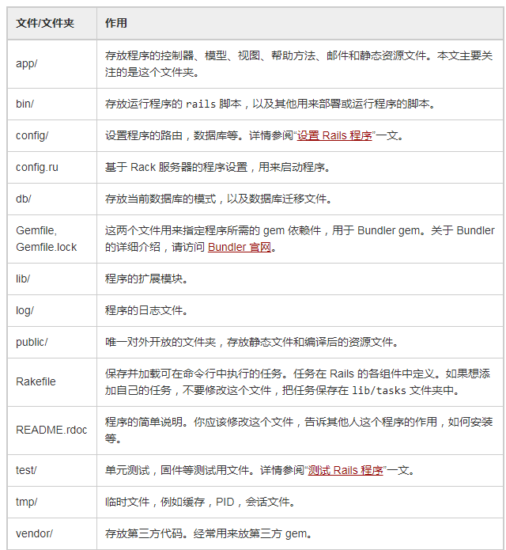
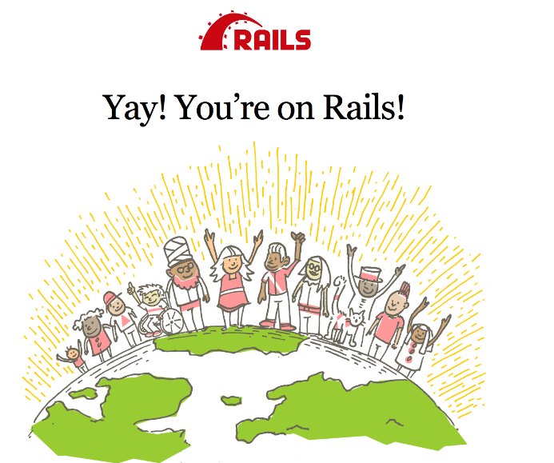
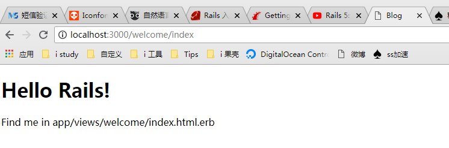
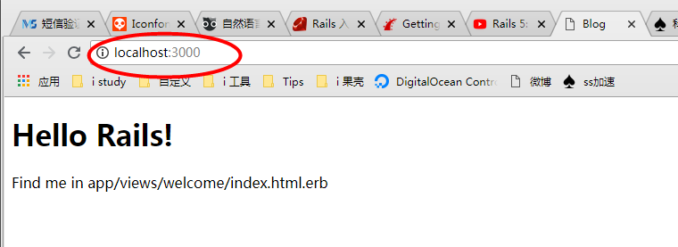

Getting Started with Rails ——搭建博客
Getting Started with Rails!
Rails 官方文档学习记录
参考资料：
命令汇总
|
|
预安装好一些软件：
- Ruby 1.9.3 及以上版本
- 包管理工具 RubyGems，随 Ruby 1.9+ 安装。
- SQLite3 数据库
- rails
查询各个软件版本：
|
|
创建 blog Application
rails new blog
cd blog

Starting up the Web Server
cd bin // 进入到 blog/bin 目录下
rails server
启动 server 后，此时浏览器打开 http://localhost:3000,便可以看见 rails 首页：

控制器，动作与视图
控制器用来接受向程序发起的请求。路由决定哪个控制器会接受到这个请求。
一般情况下，每个控制器都有多个路由，对应不同的动作。动作用来提供视图中需要的数据。
rails generate controller Controller名 Action名
// eg：创建一个名为 Welcome 的 controller 和一个名为 index 的 Action
rails generate controller Welcome index
// 该命令创建的最重要的文件以及路由：
controller 文件 位置：app/controllers/welcome_controller.rb
view 文件 位置：app/views/welcome/index.html.erb
route get 'welcome/index'
.erb 文件为 eRuby（嵌入式Ruby）编写，一般用来写视图
从 view 的文件名可看出它是与相应的动作绑定的
我们可以修改 view 文件，打开 app/views/welcome/index.html.erb 文件，将里面内容改为：
|
|
然后使用在 bin 目录下使用 rails server 启动服务器，再访问该视图对应的 URL：http://localhost:3000 + 该视图对应 route
即： http://localhost:3000/welcome/index 即可看到该页面显示：

将某个 view 设为首页
如果想访问
http://localhost:3000便能直接访问到我们刚刚设置的欢迎界面，需要修改config/routes.rb路由配置文件：
添加一行：
root ‘welcome#index’
该句告知 Rails，访问程序的根路径时，交给 welcome 控制器 下 index 动作 处理，所以对应的页面即 app/views/welcome/index.html.erb 为首页
此时直接访问： http://localhost:3000 ，会发现首页设置完毕：

添加资源
资源是指一系列类似的对象，比如文章，人和动物。
资源可以被创建、读取、更新和删除，这些操作简称 CRUD
注意：一般情况下，Rails 建议使用资源对象，而不手动设置路由
修改 config/routes.rb 路由配置文件：
添加一行：
resources :articles
控制器就是一个类，继承自 ApplicationController。在这个类中定义的方法就是控制器的动作。动作的作用是处理文章的 CRUD 操作
访问某个 URL 时，比如访问：
http://localhost:3000/articles#new
若没有控制器 ArticlesController，则报错：
Routing Error
新建控制器，若未定义处理该 URL 的动作 new，则报错：
Unknown action
定义相应的函数 new 后，若没有相应的 视图 返回，则报错：
ActionController::UnknownFormat in ArticlesController#new
再在 view 文件夹下新建视图 new.html.erb 里面放置要返回的页面。
此时再访问 http://localhost:3000/articles#new 即可正常看到相应的页面
URL 中的 articles 对应控制器为： ArticlesController，声明该控制器的文件名为：articles_controller.rb
ArticlesController 还是文件 articles_controller.rb 中的一个类，继承自类 ApplicationController
类中定义的方法即为动作，比如URL中的 new 对应该类中的 new 方法
创建 Article 模型
bin/rails generate model Article title:string text:text
这个命令告知 Rails，我们要创建 Article 模型，以及一个字符串属性 title 和文本属性 text。这两个属性会自动添加到 articles 数据表中，映射到 Article 模型。
命令生成的文件中，比较重要的有：
- app/models/article.rb
- db/migrate/20181117050805_create_articles.rb // 数据库迁移文件，用于创建数据库结构
模型的名字使用单数，对应的数据表名使用复数
运行迁移(根据迁移文件进行数据库表的创建等操作)
bin/rake db:migrate
Rails 会执行迁移操作，并创建 articles 表，模型的属性与表的字段一一对应
数据存储到数据库中
修改 articles_controller.rb 文件的控制器类，在 create 方法中添加：
|
|
显示文章
修改 articles_controller.rb 文件的控制器类，添加 show 方法：
|
|
上面将模型 Article 中的属性值保存在 @article 变量中,以便视图调用。
视图目录 views/articles 中创建文件：show.html.erb,使用 @article 变量来向页面输出内容:
|
|
此时再重新访问博客页面，即可完成创建一篇博文的操作，整个过程如下：
- 输入 URL
http://localhost:3000/articles/new，回车 - 该 URL 被传到服务器，使用指定的 Controller 也就是 ArticlesController 来进行解析
- article 调用指定的 Action 也就是 new 方法来进行处理，并返回其对应的 View 也就是 new.html.erb 到浏览器显示。
用户在返回的页面中输入博客标题，内容，点击提交。根据 rake routes 所显示的标准的 REST 动作, 此时表单会发起 POST 请求，其路由对应于 ArticlesController 控制器的 create 动作
该路由被 ArticlesController 的 create 方法处理，create 方法将创建一个模型实例，接收对应参数，并且保存到数据库中。create 方法最后有个重定向
然后调用 show 动作，取得模型参数，并在 show.html.erb 视图中返回给用户